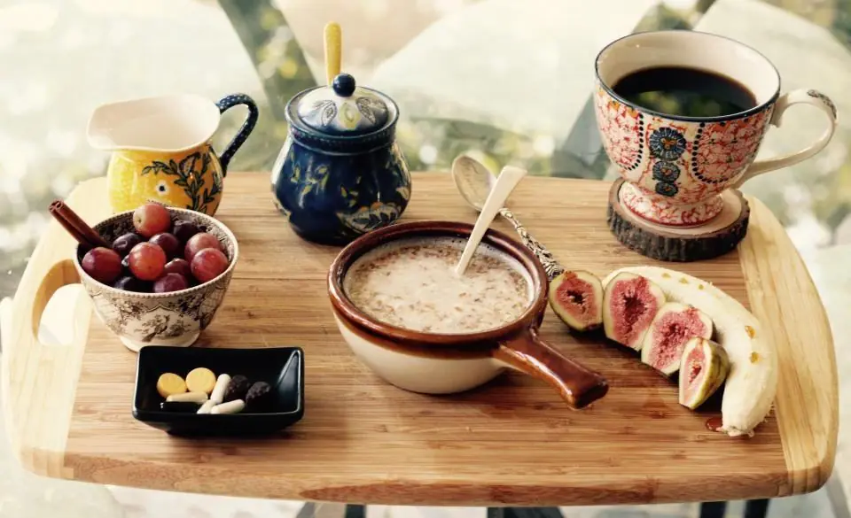
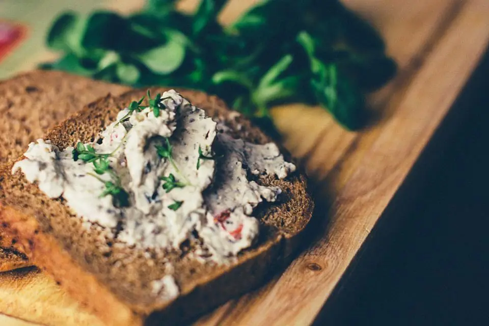
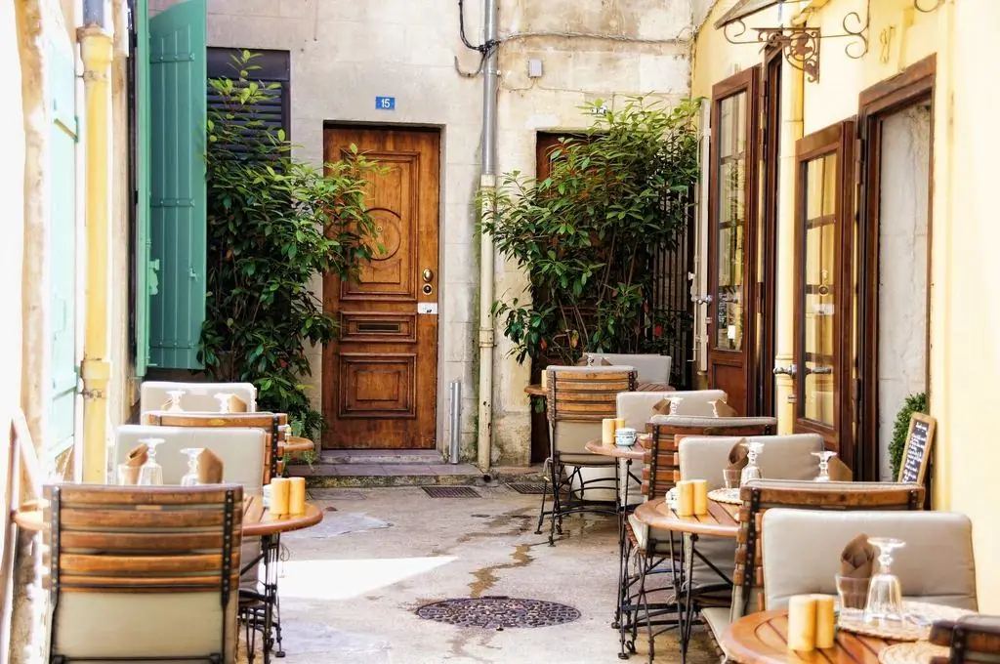
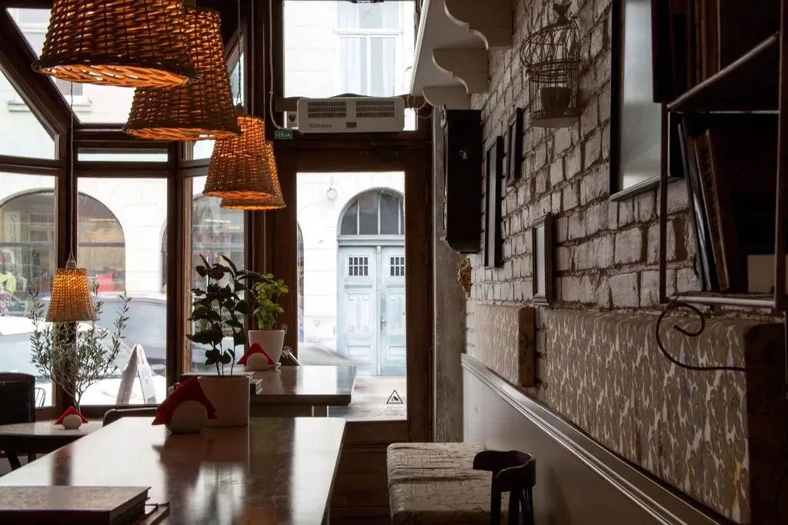
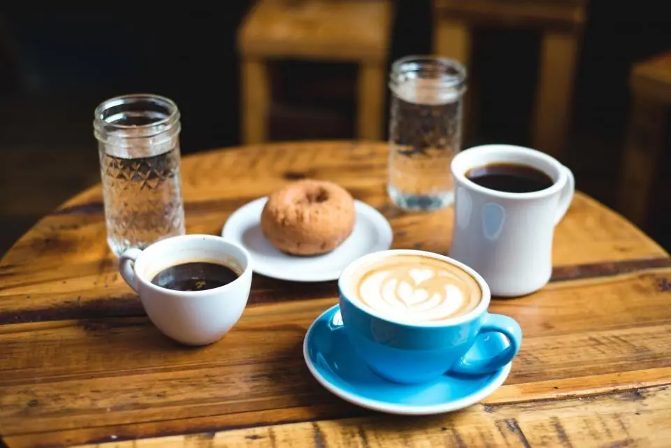

Frukost & lunch
Vi är elva personer, och bagarna börjar klockan tre varje morgon. Kafét har fyrtio platser inne och tjugo på uteserveringen mot gården, och allt bröd som säljs i disken bakas här – inget kommer från en fabrik.
Frukost, lunch eller bara en bulle?
Frukost 7–10
Frukostbrickan har surdegsbröd, smör, ost, kokt ägg, yoghurt med egen granola och en kopp kaffe eller te. Gröt med lingon och kanel finns för den som vill ha något varmt.
Frukostbrickan kostar 119 kronor och påtår ingår.

Lunch 11–14
Varje dag har vi en soppa, en paj och två smörrebröd på bageriets rågbröd. Soppan kokas på morgonen och serveras med nybakat bröd och smör så länge den räcker.
Lunch från 109 kronor, med kaffe och en kaka.

Fika och bakverk
Kardemummabullar, kanelbullar, wienerbröd och kladdkaka bakas varje morgon. Från fettisdagen till påsk gör vi semlor med mandelmassa från grunden.
Kaffet rostas av ett litet rosteri i Gävle, och påtår kostar tio kronor.

Bröd och tårtor att beställa
Surdegsbröd, frallor och kaffebröd kan förbeställas och hämtas från sju. Tårtor och smörgåstårtor till dop, studenten och födelsedagar gör vi i alla storlekar.
Beställ tårta senast tre dagar innan hämtning.
Så beställer du tårta
- 1

Beställ
Ring eller skriv vilken tårta, hur många bitar och vilken dag du vill hämta.
- 2

Vi bekräftar
Du får en bekräftelse med pris och hämttid samma dag.
- 3

Vi bakar
Tårtbottnar och fyllning görs dagen innan, och tårtan dekoreras samma morgon.
- 4

Hämta i disken
Tårtan står kall i disken från klockan sju på hämtdagen.